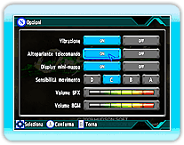

10 |
Modalità di gioco |
 |
Completa una serie di storie di missioni guidate per un giocatore e scegli tra 5 diversi livelli di difficoltà.
Sfida altri giocatori da tutto il mondo, nelle missioni Classifica sfide Nintendo Wi-Fi Connection.
Scegli "Sfida libera Nintendo Wi-Fi Connection" per giocare le missioni della modalità Storia o "missioni Classifica sfide Nintendo Wi-Fi" per giocare missioni multigiocatore speciali. Scegli Classifica Nintendo Wi-Fi Connection per confrontare i tuoi punteggi migliori per ogni missione nella modalità Storia e nelle missioni Classifica sfide Nintendo Wi-Fi Connection con altri giocatori da tutto il mondo. * Vedi le pagine 18-19 per ulteriori dettagli.
Cambia le impostazioni di gioco per farle adattare al tuo stile di gioco.
|
 |
 |
 |